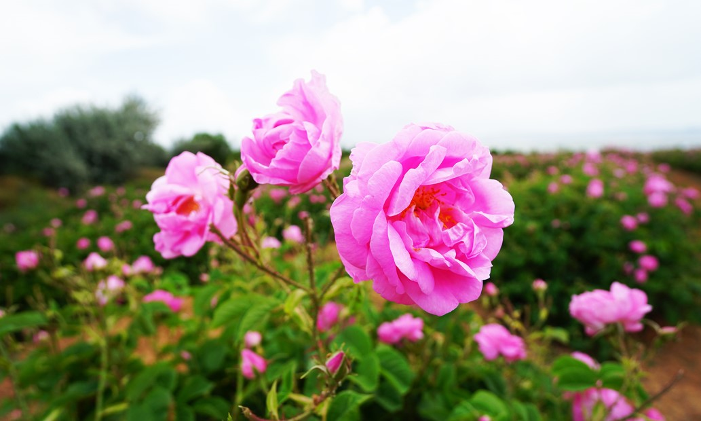

Isparta Gülü
Isparta gülü, Rosa gallica ile Rosa moschata türlerinden elde edilmiş melez bir gül türüdür. Gül yağı elde etmek için Isparta ve Burdur yörelerinde yetiştirilir. Ayrıca İnegöl köylerinde de fındık gülü adı altında yetiştirilmektedir.
Isparta Lavantası
Lavanta bahçeleri Keçiborlu İlçesi’ne bağlı Kuyucak Köyü’nde bulunmaktadır. Isparta İl Merkezine 50 km mesafede olan Kuyucak Köyü, Isparta Süleyman Demirel Havalimanı’na 25 km, Antalya-İstanbul Karayolu’na 10 km uzaklıktadır.